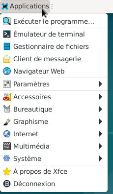
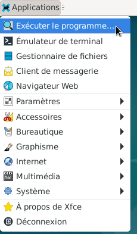
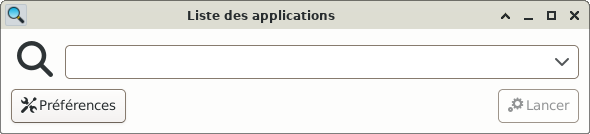
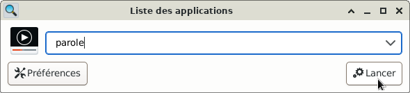
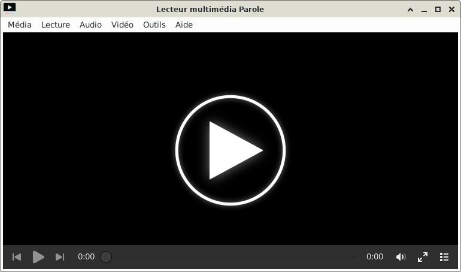
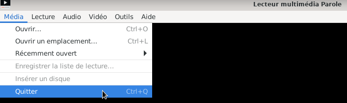
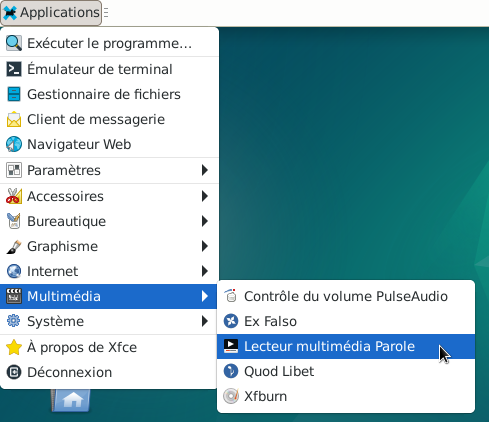

&
Ouvrir une application : Le site Xfce
Plusieurs façons existent pour ouvrir une application.
Seules 2 solutions seront vues.
Nota : Certaines applications n'ont pas d'icône ou le thème n'est pas présent ; alors l'application devra être ouverte avec le lanceur des applications.
Dans cet exemple, ouvrir l'application multimédia « Parole » à l'aide des 2 solutions.
En haut à gauche de l'écran : Simple clic > Applications






En haut à gauche de l'écran : Simple clic > Applications


Informations sur le logiciel libre et Merci.
Marques déposées :
Ce site ne fait pas partie de Debian, n'est pas produit par le projet
Debian, ni approuvé par le projet Debian.
Ce site n'est pas affilié à Debian. Debian est une marque déposée appartenant
à Software in the Public Interest, Inc.
Contribuer :
Ce site ne fait pas partie de XFCE, n'est pas produit par le projet
XFCE, ni approuvé par le projet XFCE.
Ce site n'est pas affilié à XFCE.
Ce site est juste réalisé par un passionné.